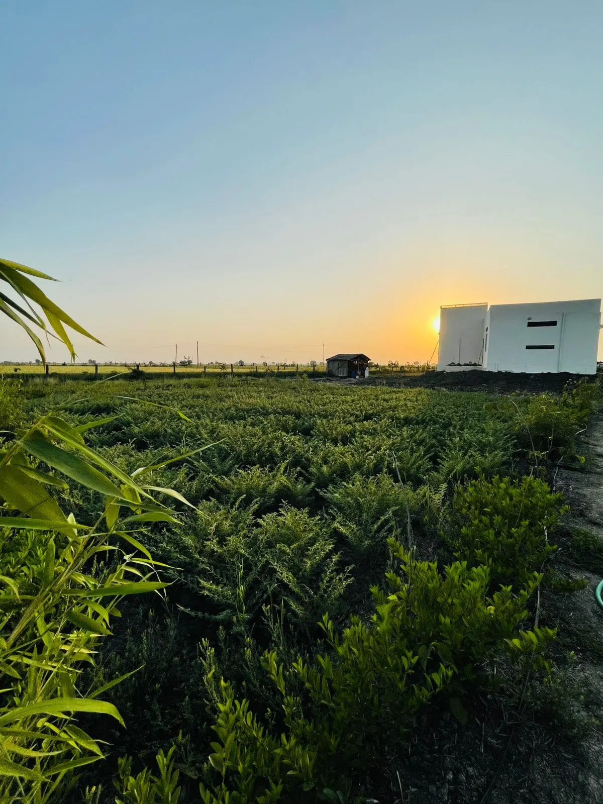
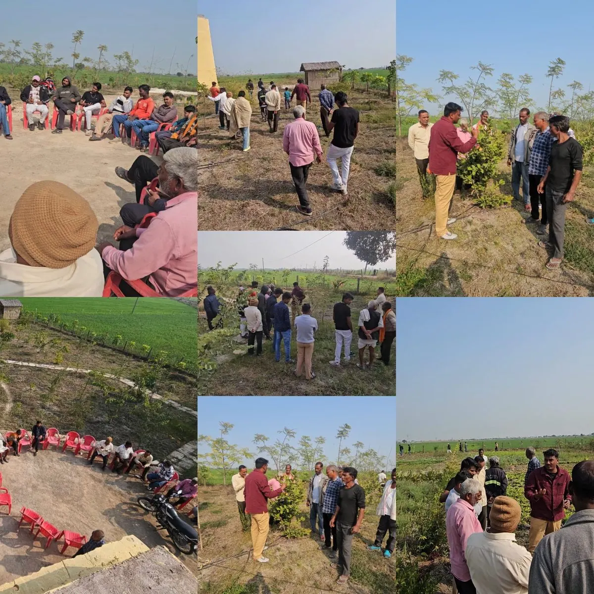
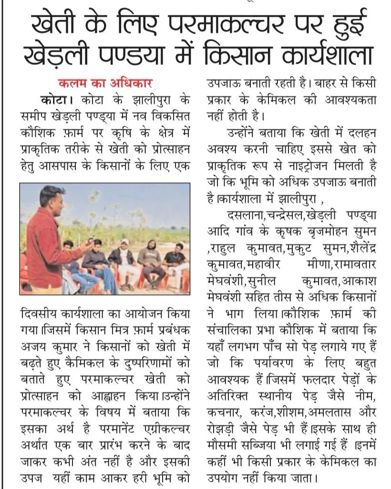
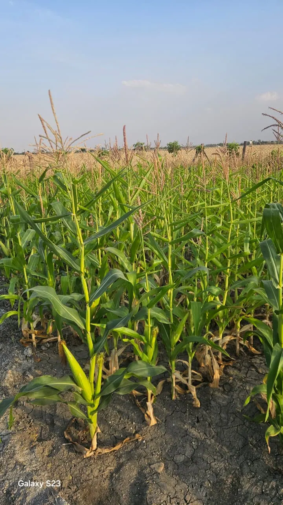

Kovana Natural Farm
Soil is a living being. We grow food the way the land wants.
Life Returns
Healthy land brings life back. As our soil heals and chemicals stay away, birds, insects and wild neighbours are choosing the farm as their home. Each one is a small sign that the ecosystem is alive.
What is Permaculture?
Permaculture is a design philosophy that mimics natural ecosystems to create sustainable, self-sufficient food systems. At Kovana Natural Farm, we work with nature, not against it.
Our approach builds healthy soil, conserves water, increases biodiversity, and produces abundant harvests without synthetic chemicals or excessive external inputs.
Observe & Interact
We study our land's patterns before taking action, designing systems that work with natural flows.
Closed-Loop Systems
Waste becomes resource. Compost feeds soil. Mulch retains water. Everything cycles.
Build Resilience
Diverse crops, healthy ecosystems, and regenerative practices create farms that thrive for generations.
Our Practices
Green Manure & Cover Crops
We plant nitrogen-fixing legumes and diverse cover crops to naturally fertilize the soil, suppress weeds, and prevent erosion.
Water-Smart Irrigation
Drip irrigation systems deliver water directly to plant roots, reducing waste and ensuring every drop counts.
Read more →Food Forests
Multi-layered plantings of fruit trees, shrubs, and perennials create productive ecosystems that require minimal maintenance.
Natural Composting
All natural matter cycles back into nutrient-rich compost, building soil fertility naturally over time.
Companion Planting
Strategic plant partnerships naturally repel pests, attract beneficials, and enhance growth without chemicals.
Mulching
Thick natural mulch layers retain moisture, regulate temperature, feed soil life, and eliminate weeding.
Read more →The Permaculture Cycle
Every stage feeds the next — from soil preparation to harvest and back again.
Fresh from the Farm
Naturally grown vegetables, harvested fresh and chemical-free. Available for pickup from the farm.
Community & Education
At Kovana Natural Farm, we believe knowledge grows when shared. We regularly host workshops, farm tours, and hands-on learning experiences to empower others on their permaculture journey.

Together, we're building a regenerative future—one garden, one farm, one community at a time.
In the News
Our permaculture workshops and farm practices have been featured in local press.

Permaculture Workshop at Khedli Pandya
Kalam Ka Adhikar
A one-day workshop was organized near Kota's Jhalipura at Khedli Pandya for local farmers to promote natural farming methods through permaculture.
Farmer Workshop on Permaculture for Agriculture
Local Press
Farm manager Ajay Kumar encouraged farmers to move away from chemical farming and adopt permaculture. Over 30 farmers from nearby villages participated.
Journal
Stories, techniques, and daily notes from life on the farm.

The Fire Didn't Start Here
A wildfire from a neighbour's dry parali field crossed our boundary — and a five-minute heat wave the next day did even more damage than the flames.

First corn on the farm — ever
Sown by hand in March. First harvest is just weeks away — a milestone for the farm.

Mulching — Nothing Leaves the Farm
Fallen leaves, coir pith rings, living ground cover — how we keep soil protected and build fertility without burning or discarding anything.
Visit the Farm
Come walk the land. Join a workshop. Ask us anything. We'd love to hear from you.